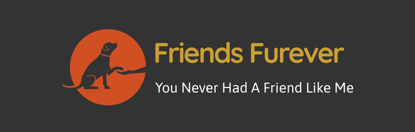

About the Friends Furever association
Arriving at the Friend Furever kennel is greeted with loud and crowded attention from the dozens of dogs,
those who want to attract attention and be chosen as adoptees for a permanent home.
The kennel is operated by the Friends Furever association that rescues and cares for abandoned dogs, rehabilitates them, takes care of housing, food, treatments and vaccinations
and looks for a good and suitable permanent home for each of them.
The association operates on a voluntary basis only and has no sources of funding from any entity or institution.
The work of the volunteers, which is done wholeheartedly, is accompanied by many difficulties, due to the constant need to deal with finding solutions to finance the food expenses,
the maintenance of the place and veterinary treatments. The volunteers are the ones who do the almost impossible and give the dogs life, care and health, and a lot of hope.
 Home
Home About Us
About Us Adopt Me
Adopt Me Donations
Donations Contact Us
Contact Us